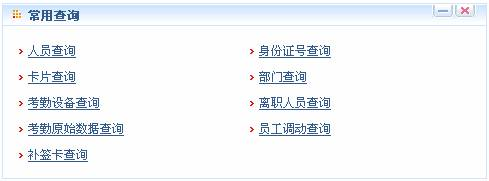
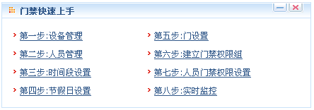

第3章我的工作面板
用户登录系统后，显示【我的工作面板】主界面，系统中的常用操作和重要信息默认都会在此显示。
默认工作面板包括以下模块：
-
 常用操作
常用操作
用户在这里可以快速进行一些常用操作，如下图所示。

新增人员，请参见4.4.1 新增人员；
人员发卡，根据选择消费系统分类：IC消费系统，请参见IC消费---卡管理中的IC--4.6.1 发卡；ID消费系统，请参见ID消费---卡管理中的ID--4.6.1 发卡；
新增部门，请参见4.2 部门管理；
新增区域，请参见5.1 区域设置；
指纹登记，请参见4.4 人员管理中的4.4.2 人员信息维护；
新增人员离职，请参见4.5人员离职；
新增补签卡，请参见7.6.3 补签卡；
请假，请参见7.6.2 请假；
考勤计算，请参见7.7 考勤计算与报表；
查看报表，请参见6.7 门禁报表；
设备监控，请参见5.5 设备监控；
新增节假日，请参见6.2 门禁节假日；
-
常用查询

用户在这里可以快速进行一些常用查询，包括人员查询、身份证号查询、卡片查询、部门查询、考勤设备查询、离职人员查询、考勤原始数据查询、人员调动查询和补签卡查询等。
点击进行相应的查询操作，进行模糊查询，如需进行高级查询，请进入原始菜单，点击按钮，具体操作请参见附录7. 查询功能。
-
系统提醒、公告
当【系统设置】中的公告公布中设置好公告后，就可以在此显示公告。另外，系统自动统计当前过生日的人员并在此处显示提示信息。信息按类别显示。具体操作请参见9.5 公告管理。
-
本日出勤率
放置用户需要进行图形化浏览的关键性考勤数据，直观的显示当日人员出勤情况，即请假、考勤、缺勤的人数情况。
-
门禁快速上手

第一步：设备管理，请参见5.2 设备管理；
第二步：人员管理，请参见4.4 人员管理；
第三步：时间段设置，请参见6.1 门禁时间段；
第四步：节假日设置，请参见6.2 门禁节假日；
第五步：门设置，请参见6.3 门设置；6.3.1 门管理；6.3.2 首卡常开；6.3.3 多卡开门；6.3.4 互锁设置和6.3.5 联动设置。
第六步：建立门禁权限组，请参见6.4 门禁权限组；
第七步：人员门禁权限设置，请参见6.5 人员门禁权限设置；
第八步：实时监控，请参见6.6 实时监控。
-
自定义设置
点击右上角【自定义工作面板】，弹出对话框，选择您不需要显示的模块，去掉勾选标志（系统默认全选），点击【确定】完成设置。此时界面显示就是按用户需要设置的模块；
或者直接点击某个模块上的“ ”图标收缩显示，点击“
”图标收缩显示，点击“ ”关闭该模块，鼠标点击上侧的栏目条拉动调整位置；
”关闭该模块，鼠标点击上侧的栏目条拉动调整位置；
如果需要返回原面板，点击【还原工作面板】即可刷新并返回系统默认的工作面板状态。